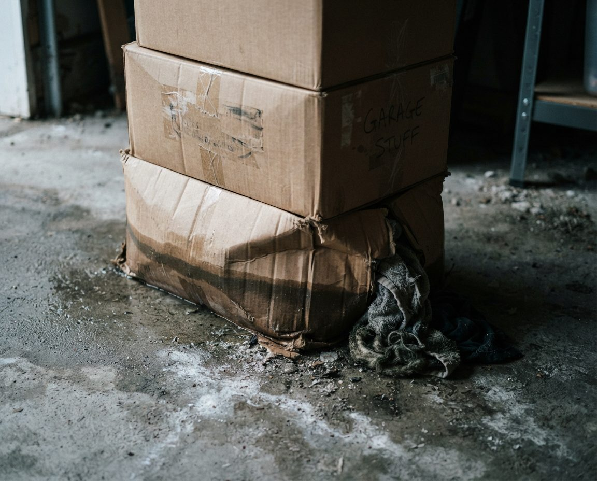

Britannia runs from Britannia Drive down to 50 Avenue, with the Elbow River and Riverdale Park on its west side. Britannia was established in 1956 and most of it was built by the end of that decade. Mayfair (1957) and Bel-Aire (1960) sit further south, between Elbow Drive and the Glenmore Reservoir, with the Calgary Golf and Country Club along Bel-Aire's north edge and Glenmore Trail under Mayfair. Together they're small. The Mayfair Bel-Aire Community Association counts 314 dwellings, and the City's 2012 census put Britannia at 309.
Small and old means a lot of garages that have had one owner, or one family, for a long time. The community association says many of its residents are original homesteaders. When those houses change hands, the garage is usually the last room anyone deals with. Sometimes the house itself is about to be replaced, and then the garage has a deadline.
For a quote, email inquiry@garagescape.ca your street name and three photos: the garage from the street with the door up, the back wall, and the rafters. If there's a listing date, a possession date or a demolition date, put it in the subject line. Or call (587) 804-9266 (Monday to Friday 8 to 6, Saturday 9 to 4).
Everything Leaves by the Front Driveway
In Mount Royal and Elbow Park we usually load from the lane behind the garage. There's no lane here. Britannia's streets (Coronation Drive, Elizabeth Road, Imperial Way, Edinburgh Road) curve through the neighbourhood, and Britannia Drive follows the top of the slope above Riverdale Park. Mayfair and Bel-Aire are crescents and short Place streets off Elbow Drive and Malibou Road. The garages face the street, so the truck, the sorting piles and the crew are all in view of the houses across the road.
That shapes how we run a job here:
| On your street | What we do about it |
|---|---|
| Curving streets with parked cars | The truck parks on your side, in front of your frontage, never across a neighbour's driveway. On a tight curve we tell you the day before where it will go. |
| Short Place streets and crescents | We check on the map whether the truck can turn around or has to back out, and book a smaller truck with more trips if it can't. |
| Houses fronting Elbow Drive | We don't load from Elbow Drive traffic. If there's a side street or a wide driveway, the truck uses that. |
| Sorting in view of the street | Piles stay on your driveway, not the sidewalk, and anything personal is boxed before it comes out of the garage. |
| Sloped or icy driveways | We carry on dollies and ask you to clear any ice the day before, or we sand it ourselves before anything heavy moves. |
| Collection day | Your black, blue and green carts stay where the City truck can reach them. |
A roll-off bin is the other option, and on a wide driveway it fits. It also sits there for several days, in full view, and someone still has to fill it. We sort and load in one visit. Whether a bin can go on the street instead of your driveway is a City question, so call 311 before you book one.
Owner, Heir, Realtor or Builder: What Each One Needs
The same cleanout means something different depending on who's booking it. Tell us which of these you are and we'll plan around it.
| Who's calling | What they usually need | How we set it up |
|---|---|---|
| The owner, moving after decades | Time to decide, and a short list of what's coming to the new place | We work at your pace and keep the moving pile against one wall, measured against the storage at the new home. |
| An heir or executor, often out of town | Nothing of value thrown out, and proof of what left | Video walkthrough, a photographed set-aside pile, and a list of where each load went. Our estate garage cleanout page has the full process. |
| A realtor getting a listing ready | An empty, swept garage before the photographer arrives | Booked back from the photo date. Our cleanout before selling page covers listing and possession timing. |
| A builder or new owner planning a rebuild | Contents out before demolition, with nothing structural touched | Contents only, cleared to bare walls, with a note of anything attached that the demolition crew needs to know about. |
Before the Bungalow Comes Down
If you've bought one of the original 1950s or 1960s houses here to replace it, the garage contents need to go before the demolition crew arrives, and the order matters:
- Read your demolition quote for the word "contents." Check whether it covers what's stored inside the buildings. If it doesn't say, ask before you book anything else.
- Book the cleanout before the demolition date is fixed. If the cleanout slips, the demolition date slips with it.
- Get anything you want salvaged out first. We treat workbenches and shelving screwed to the wall as part of the building and leave them unless you tell us they're coming out. We won't cut anything out of a wall.
- Leave anything attached to the building for the professionals. Wallboard, ceiling tiles and pipe wrap in a house this age should be tested for asbestos by an abatement contractor before anyone removes them. We clear what's stored in the garage, not what it's built from.
- Empty the rafters last. If the overhead storage is plywood laid loose across the joists, we take it down by hand rather than pulling it.
The same applies if the house is staying and only the garage is being replaced. A cleanout after the build is a different job, covered on our post-renovation garage cleanup page.
In Bel-Aire and Mayfair, the Garage Stays a Garage
Most lots in Mayfair and Bel-Aire carry restrictive covenants on title from the original developer. They run with the land and bind every later owner, and they work alongside the City's zoning rather than under it. The Mayfair Bel-Aire Community Association's position, after advice from its lawyers, is that these covenants don't allow secondary or backyard suites, and it points to a December 2013 court decision (Deagle v. 1678452 AB Ltd.) as precedent.
In practice that means the plan some Calgary owners have for an old garage (turn it into a backyard suite) usually isn't open here. The garage is going to stay a garage, and the way to get it back is to empty it. A cleanout doesn't build or change anything, so the covenants don't come into it, but if you're selling, your lawyer will be reading them. Which covenant applies to your lot is on your land title; the community association lists the registration numbers.
Sixty Years of Storage, Item by Item

An illustration of long-stored boxes, not a photo of a client's garage. We open the bottom row of boxes first, because damp reaches it first.
A garage that's held the same family since the house was built can hold tools from three generations, golf bags (the Calgary Golf and Country Club and Earl Grey are both close by), a chest freezer, paint from every room the house ever had, and older lawn and garden products. This is where each goes.
| What we find | Where it goes | Cost to you at disposal |
|---|---|---|
| Old paint, stain, solvents, lawn and garden chemicals | Lincoln Park/Garrison Green Fire Station #20, 2800 Peacekeepers Way SW, open 8 a.m. to 6 p.m. daily. Kept in original containers, never combined. | Free for residents |
| Barbecue and camp propane cylinders under 30 lb | Fire station household hazardous waste drop-off, kept out of the garbage load | Free |
| Chest freezer or old fridge | City landfill | $17 refrigerant fee plus its weight |
| Tires, old televisions, radios and electronics | City landfill, kept separate from garbage | Free when separate |
| Golf clubs, skis, tools, furniture in usable shape | Donation or family, after you've had first pick | Free |
| Papers, photo albums, letters, jewellery boxes | The set-aside pile. Never in the truck without your answer | Nothing |
| Firearms or ammunition | Not ours to move. Call Calgary Police non-emergency at 403-266-1234 | Nothing |
| Everything else | East Calgary or Shepard landfill, tarped (both closed Sundays) | $25 under 250 kg, then $113 a tonne for the whole load |
One rule drives most of that table: if free items arrive at the landfill mixed into garbage, the City charges for the whole load. Sorting on your driveway is what keeps the paint and the electronics off the scale.
Coyotes, Deer and an Open Door
The Mayfair Bel-Aire association lists the neighbours it shares the area with: rabbits, coyotes, deer and the occasional bobcat. Britannia backs onto the river slope and Riverdale Park. The same association says the most common safety problems in the community are thefts and break-ins. Both matter on a cleanout day, when a garage door is up for hours and half its contents are on the driveway.
- Food and garbage leave first. Birdseed, pet food, old freezer contents and bagged garbage go on the truck in the first hour, so nothing sits out to draw animals.
- The door comes down when we're not carrying. If the crew is all inside sorting, the door closes to waist height or all the way.
- Tools and bikes are bagged or boxed before they go outside. Nothing valuable is left lying on the driveway.
- Nothing stays out overnight. On a two-day job, anything still waiting on a decision goes back inside and the door is shut before we leave. If you follow the 9 p.m. routine the community association recommends, the garage door is part of it.

An illustration of a full double garage, not a photo of a client's garage. When the car hasn't fit for years, we budget a full day, and a second one if the family wants to go through the boxes with us.
What Moves the Quote on These Streets
We quote from your photos, or from a walkthrough on a big job, and the price is settled before the truck is booked. What changes it here:
- Weight that reaches a paid scale. Concrete blocks, old exercise equipment and paint cans full of hardened paint are heavy for their size. The more we can route to free streams, the less goes on the scale.
- The carry. A short flat driveway is quicker than a long or sloped one, or a garage where the truck can't park close.
- Refrigerant appliances. Each fridge, freezer or air conditioner carries its own landfill fee.
- How much needs a decision. A garage the family has already gone through moves quickly. One where every box has to be opened takes longer, and that's time we'd rather budget for than rush.
- A fixed date. A demolition, possession or listing date can mean a Saturday or a two-crew day.
We carry $2 million in general liability insurance. If you need the certificate for a builder, a property manager or a condo board at the new place, ask when you book. For how bins, hourly help, junk trucks and full cleanouts compare across the city, see our Calgary garage cleanout page. If you need us this week, our same-day garage cleanout page explains what makes a same-day job possible.
Neighbourhoods this page covers
Britannia, Bel-Aire and Mayfair, west of Elbow Drive between Britannia Drive and Glenmore Trail. Lane garages further north in Mount Royal, Elbow Park, Roxboro and Rideau Park are on our Mount Royal and Elbow Park cleanout page. Across the reservoir, see Pump Hill and Bayview and Lakeview. Once the garage is empty, if you'd like it fitted out, our custom garage cabinets and Elbow Park garage organization pages cover that side.